기획서와 동작하는 프로토타입을 화면 단위로 정리했습니다. 각 장은 그 화면이 흐름의 어디에 있고, 왜 그렇게 구성했는지를 다룹니다.
①은 결과를 한 번 받아 결재선에 올리는 문서다. 되돌아올 일이 없으므로 직렬이 맞다. 반면 ②는 여러 장을 만들고 비교하고 다시 만드는 작업이다. 매번 처음으로 돌아가면 흐름이 끊긴다. 그래서 ②에는 별도의 로딩 화면이 없다. 제출하면 결과 화면이 곧장 생성중 상태로 열린다. 완성된 결과가 쌓이는 곳은 ③ 운영이다 — 만드는 화면과 보관하는 화면을 나눴다.
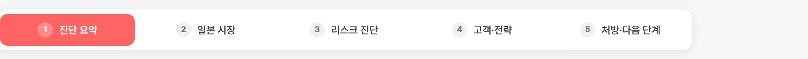
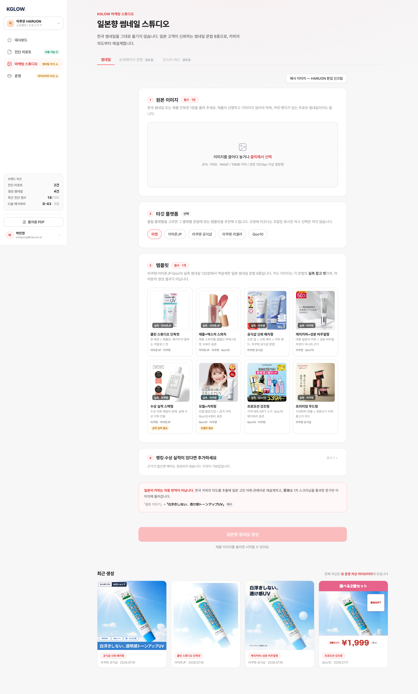
색만으로 구분하지 않는다. 색각 이상에서도 판정이 읽혀야 하므로 항상 기호와 문구를 함께 붙인다.
입력 섹션마다 머리에 배지를 둬서, 폼을 다 읽기 전에 무엇을 꼭 넣어야 하는지 판단할 수 있게 했다.
루브릭 A~E, 약기법 K1~K11, 썸네일 스타일 A~H 같은 내부 ID는 화면에 노출하지 않는다. 「공식샵 신뢰 배지형」처럼 읽어서 뜻이 통하는 이름으로만 쓴다. 내부 ID는 데이터 계약 안에만 존재한다.
로그인 후 처음 만나는 화면. 3축을 담는 현관이자, 지금 할 일 하나를 골라 주는 허브다.
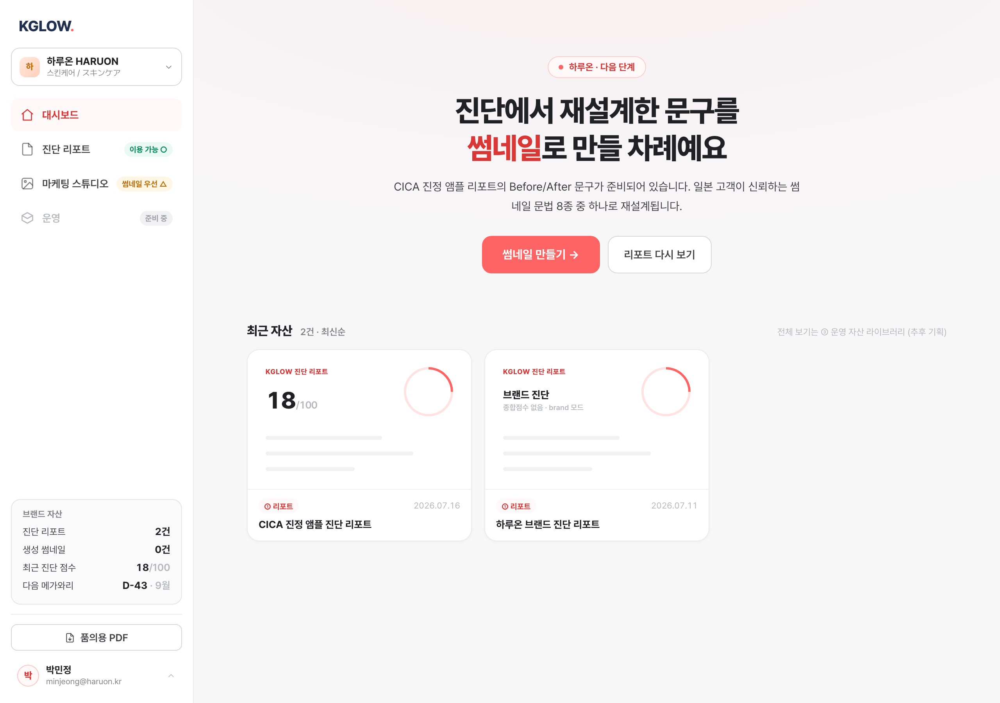
↓ 최근 자산 이어짐KPI는 본문 카드가 아니라 사이드바 하단 "브랜드 자산" 위젯이다. 값은 시스템 카운트(리포트·썸네일 건수)와 발행 리포트 점수만이다. 시장 성과 수치·리뷰는 어떤 상태에서도 그리지 않는다(증거 원칙).
본문 중앙 히어로가 규칙 기반 추천 1개를 출력한다. 데모 서사는 "리포트는 있고 썸네일은 없다"이고, 리포트 블록8과 같은 고정가 퍼널 동선으로 ② 스튜디오를 가리킨다.
사이드바 3축 내비의 배지는 실제 개발 상태와 일치한다. ① 이용 가능 ○ · ② 썸네일 우선 △ · ③ 준비 중. 화면이 완성도를 부풀리지 않는다.
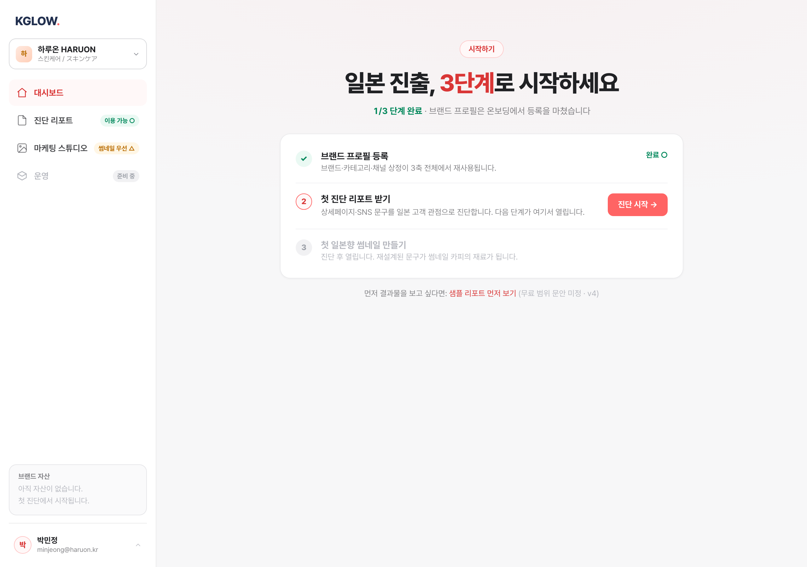
브랜드 프로필은 온보딩에서 이미 등록했으므로 1단계는 처음부터 완료 ○다. 0이 아니라 1에서 시작해, 이미 진행 중이라는 감각을 만든다.
"샘플 리포트 먼저 보기" 링크로 결과물의 실물 가치를 먼저 보여준다(스티비의 샘플 이메일 문법). 무료=샘플 재정의(v4)에 따른 문안은 미정으로 표기해 뒀다.
3단계 썸네일은 비활성이지만 숨기지 않는다. "진단 후 열립니다"라고 조건을 말한다. 재설계된 문구가 썸네일 카피의 재료가 된다는 제품 구조를 첫 화면부터 가르친다.
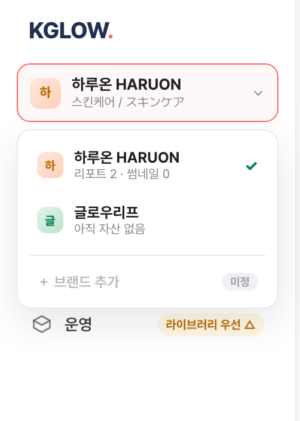
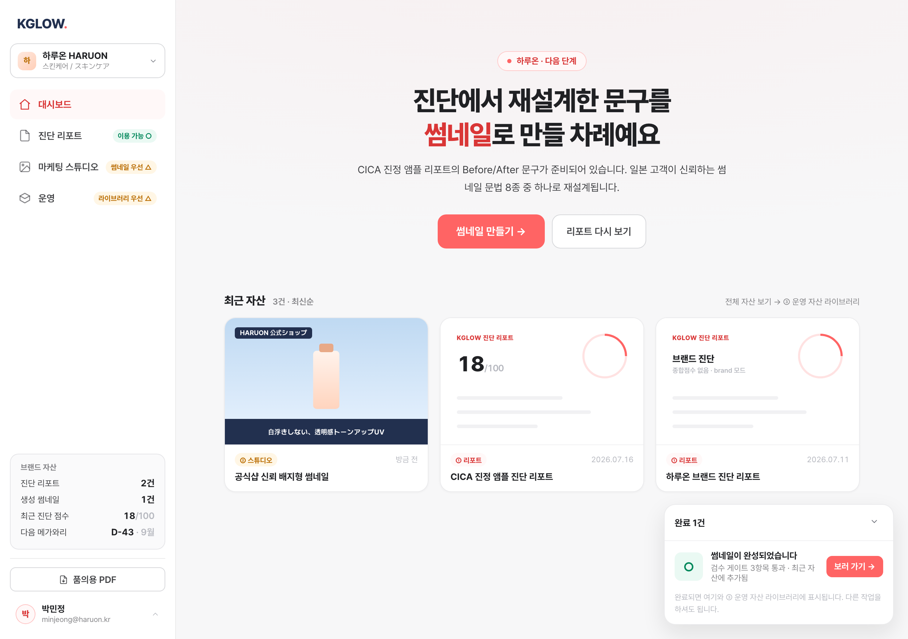
↓ 그리드 맨 앞에 새 카드Shopify 스토어 스위처 문법. 자산 0 브랜드(글로우리프)로 바꾸면 같은 홈이 첫 방문 상태로 바뀐다. 컨텍스트가 곧 데이터다.
② 생성 단계 문법을 우하단 플로팅 패널이 그대로 재사용한다. 완료되면 그리드 맨 앞에 crossfade로 나타나고, 패널의 완료 행이 "보러 가기"를 건넨다. KPI의 썸네일 건수도 그 순간 함께 오른다.
한국어 상세페이지를 일본 고객 관점에서 진단하고, 무엇을 왜 고쳐야 하는지를 결재 가능한 형태로 내놓는다.
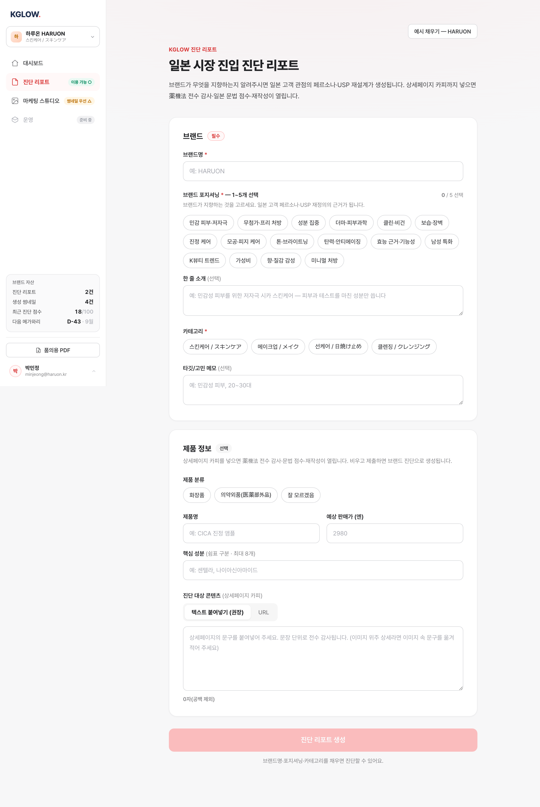
↓ 아래로 이어짐브랜드 진단 — 콘텐츠를 안 넣어도 진단이 나간다. 대신 콘텐츠가 필요한 블록은 잠긴 채로 표시된다.
브랜드+제품 진단 — 콘텐츠를 넣으면 8블록 전체를 산출한다.
고객마다 손에 든 자료가 다르다. 제품 상세를 요구하면 상세가 아직 없는 브랜드는 진단 자체를 못 받는다. 그래서 필수 축을 브랜드로 내리고, 제품은 있으면 더 정밀해지는 가산 요소로 뒀다.
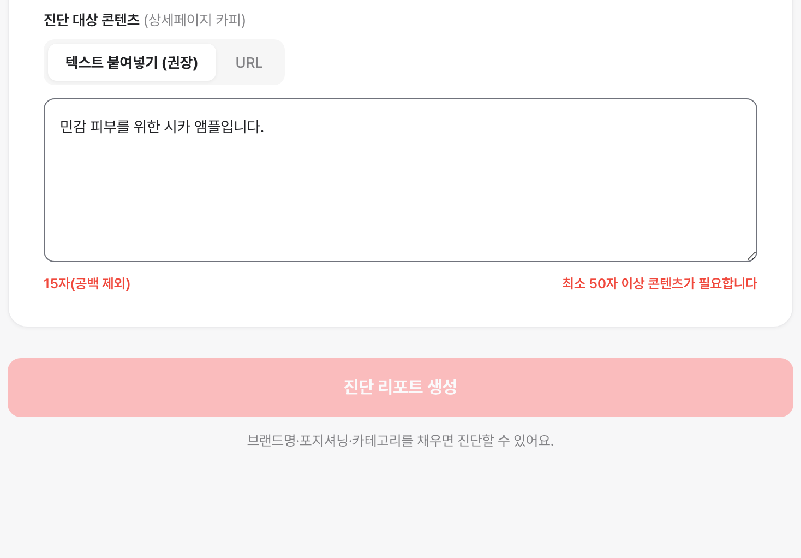
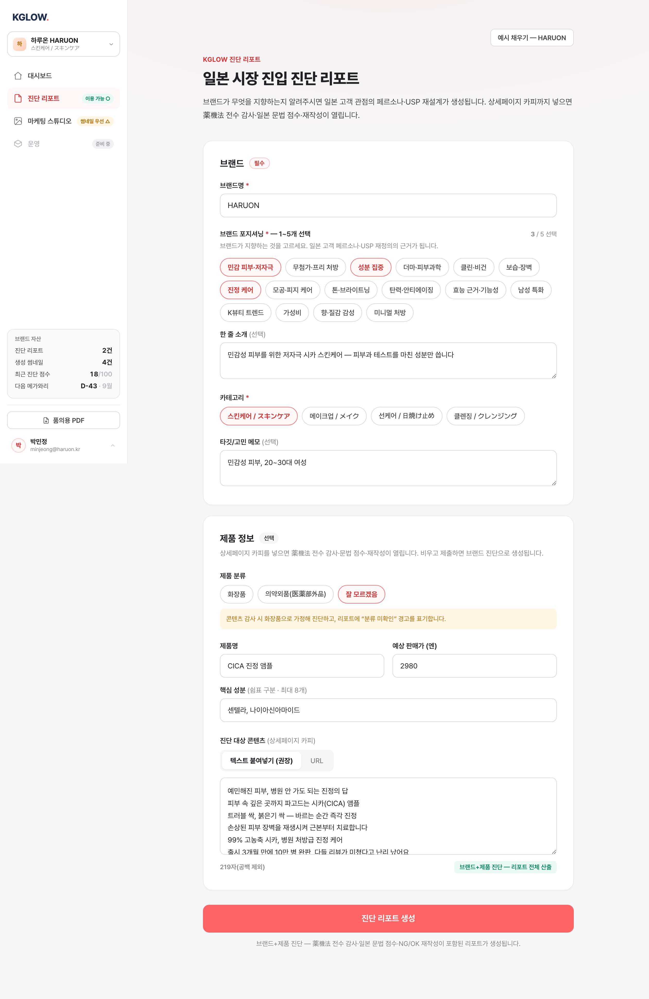
↓ 아래로 이어짐통과, 브랜드 진단으로 진행
적색 경고 + 제출 잠금
“최소 50자 이상 콘텐츠가 필요합니다”
통과하되 정밀도 제한 안내
“200자 이상이면 더 정밀해집니다”
브랜드+제품 진단
리포트 전체 산출
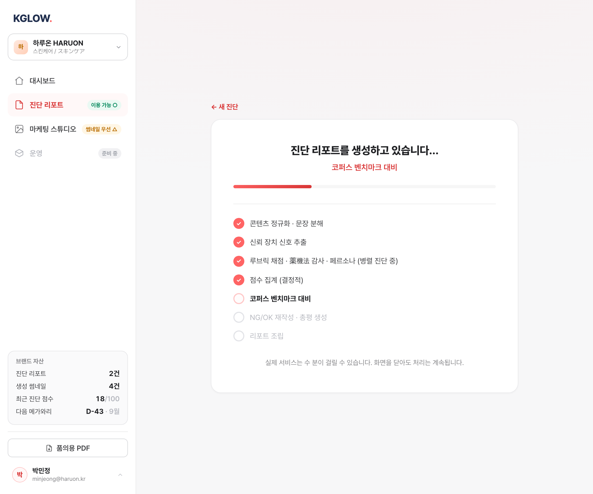
단계마다 상태를 셋으로 구분한다. 완료(코랄 ✓) · 진행 중(코랄 테두리) · 대기(회색). 무엇을 하고 있는지가 곧 진행 표시다.
“실제 서비스는 수 분이 걸릴 수 있습니다. 화면을 닫아도 처리는 계속됩니다.”
퍼센트 막대를 그리면 지키지 못할 약속이 된다. 남은 시간을 모르는데 80%에서 멈춰 있으면 고장으로 읽힌다. 그래서 비율 없는 무한 진행바를 쓰고, 대신 단계 이름을 구체적으로 적었다.
실패도 감추지 않는다. 일부 호출이 실패하면 일반 템플릿으로 대체해 발행하지 않고 잡 전체를 실패로 처리한다.
| 탭 | 구성 블록 |
|---|---|
| 1진단 요약 | 블록 1 (종합 점수 0~100) — 점수 도넛 · 레이더 · 최우선 재설계 Top 3 |
| 2일본 시장 | 시장 브리핑 (블록 없음 · 정적 · LLM 무관) — 관례 실물 · 썸네일 분포 · 유행어 · 반면교사 |
| 3리스크 진단 | 블록 4 (벤치마크) · 블록 3 (薬機法 전수 감사 ①~⑪) · 블록 5 (루브릭 점수) |
| 4고객·전략 | 블록 2 (페르소나 · 구매여정 · USP) · 블록 6 (정보 공백 → 이탈 경로) |
| 5처방·다음 단계 | 블록 7 (Before/After 재설계) · 블록 8 (맺음 · 고정가 · 규정 출처 · 한계) |
1장에서 본 관례가 곧 2장의 채점 기준이다. 시장 브리핑이 채점 기준의 예습 역할을 한다.
블록 번호는 데이터 계약의 ID다. 화면이 보기 좋다고 번호를 다시 매기면 백엔드·스펙과 어긋난다. 그래서 재배열은 화면 레이어에서만 하고 블록 번호·채점 산식은 건드리지 않았다.
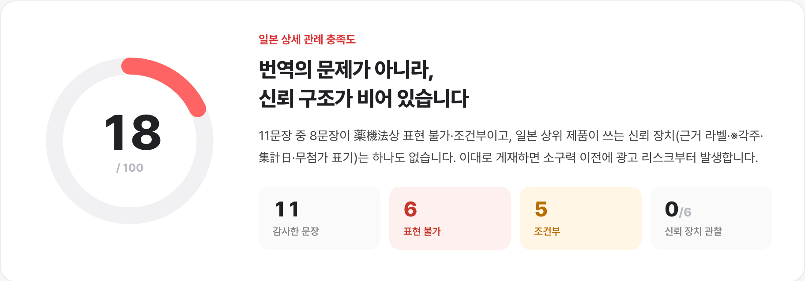
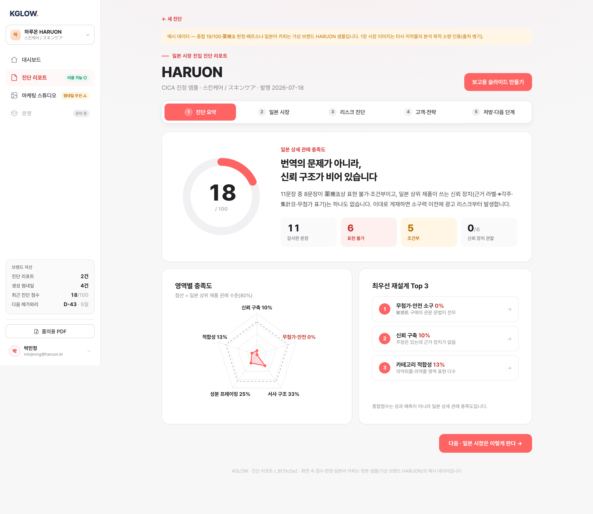
↓ 레이더 차트 · Top 3 이어짐점수 옆에 “일본 상세 관례 충족도”를 항상 붙인다. 이 숫자는 매출 예측이 아니라 관례를 얼마나 지켰는지의 척도이고, 그렇게 읽히지 않으면 오해가 된다.
시급·보완·양호 같은 등급 라벨은 붙이지 않았다. 임계값 근거가 아직 없기 때문이다.
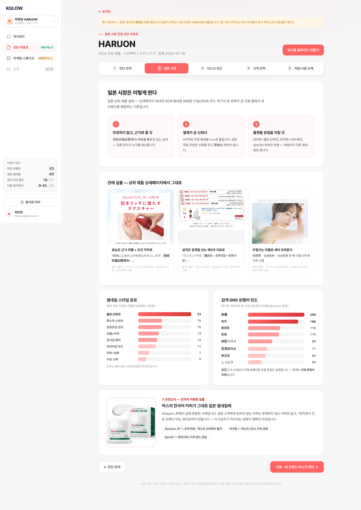
↓ 썸네일 분포 · 유행어 · 반면교사 이어짐시장 브리핑은 사전에 수집·정제한 실측 데이터다. 브랜드마다 달라지지 않으므로 정적으로 제공한다.
여기서 본 관례가 탭 3의 채점 기준과 같다. 기준을 모르는 채로 점수를 받으면 납득이 되지 않기 때문에, 시장을 먼저 보여주고 진단을 뒤에 뒀다.
역할이 겹치지 않게 내용 중복을 금지했다. 브리핑은 일본 관례를, 탭 3은 내 콘텐츠 대비표를 맡는다.
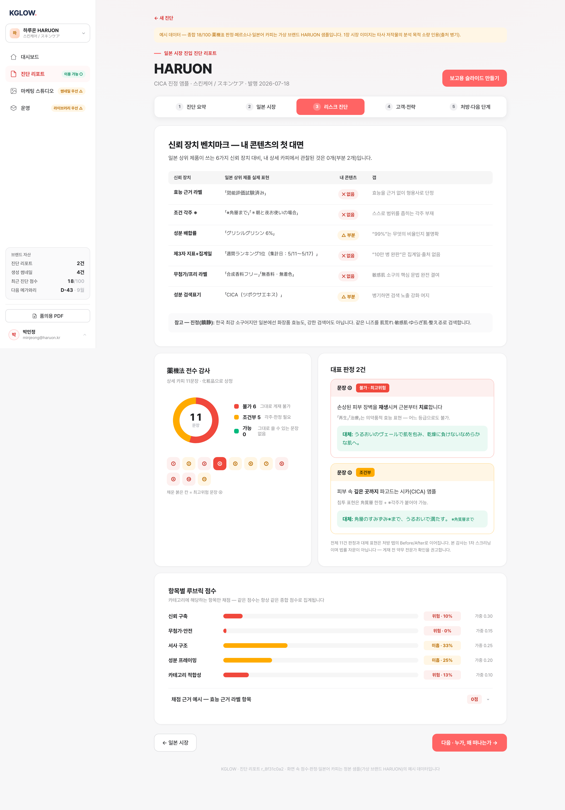
↓ 루브릭 막대 · 채점 근거 아코디언 이어짐판정을 히트맵 격자로 깐 이유는 빠뜨린 문장이 없다는 사실 자체가 정보이기 때문이다. 발췌하면 “고른 것만 본 것 아니냐”는 의심이 남는다.
薬機法 판정은 종합 점수에 합산하지 않는다. 판정이 흔들려도 점수는 그대로 유지되도록 두 축을 분리했다.
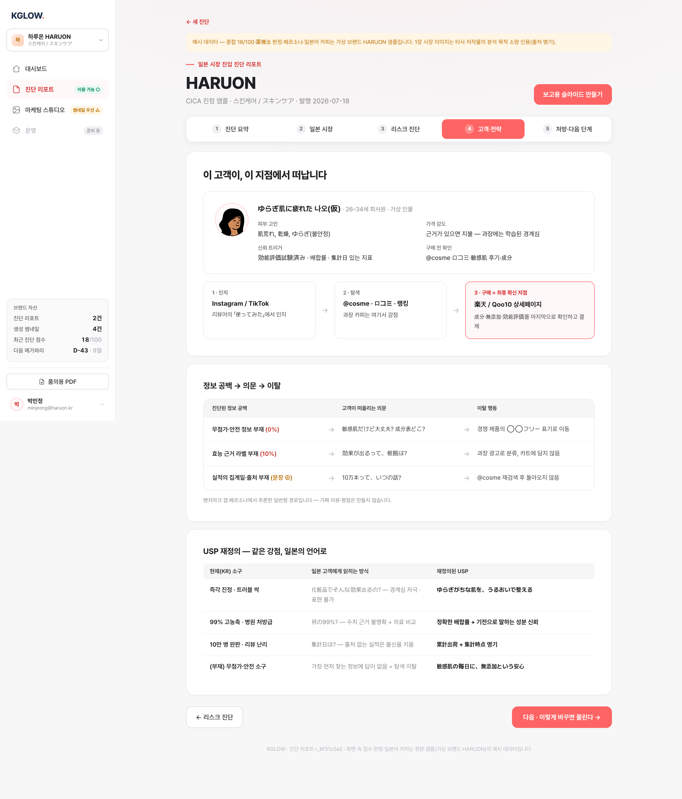
↓ 정보 공백 표 · USP 재정의 이어짐이 블록은 처음에 리뷰 데이터를 근거로 한 리뷰 인과 서사로 기획했으나, 실제 리뷰 데이터가 없어 정보 공백 → 이탈 경로로 다시 짰다. 가진 데이터로 말할 수 있는 범위에 화면을 맞춘 것이다.
페르소나 이미지에는 가상 인물이라고 적었다. 실존 고객 데이터로 오인되면 안 되기 때문이다.
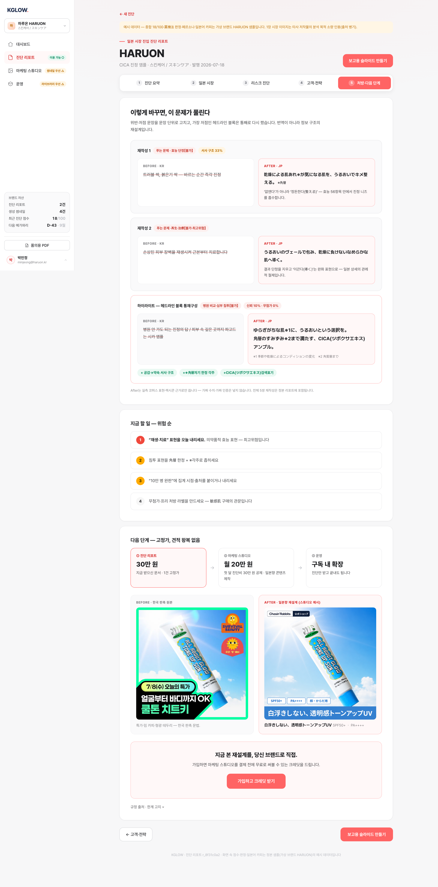
↓ 할 일 · 고정가 퍼널 · 닫는 실행 밴드 이어짐리포트의 마지막이 스튜디오의 입구다. 썸네일 KR→JP 예시를 맛보기로 보여주고, 가입하면 결제 전에 스튜디오를 써볼 수 있는 크레딧을 준다.
대행이 아니라 사전 진단 → 실행 지원임을 이 자리에서 명시한다.
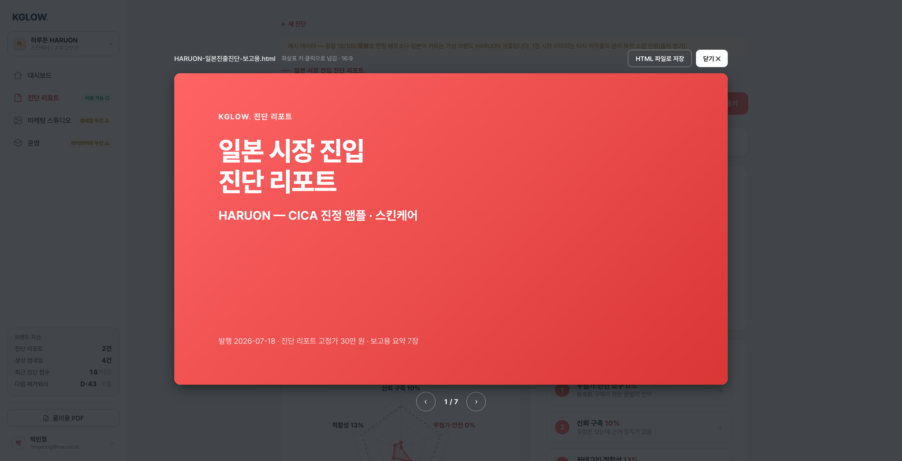
표지 → 결론 → 점수·Top 3 → 약기법 리스크 → 벤치마크 갭 → Before/After → 다음 단계·비용
화살표 키·클릭으로 넘기고, 자체 완결된 HTML 파일로 저장한다.
뼈대는 품의 문서의 논리다 — 얼마에 뭘 받았나 → 결론 → 근거 → 위험 → 그래서 뭘 하나.
리포트는 담당자가 읽는 화면이고, 이 7장은 결재자가 판단하는 문서다. 읽는 순서가 다르므로 같은 데이터를 다르게 배열했다.
브랜드 진단처럼 산출이 없는 경우, 해당 장을 “측정 못 했습니다”로 채우지 않고 장 자체를 만들지 않는다.
진단에서 “무엇을 고쳐야 한다”를 받았다면, 여기서는 그 콘텐츠를 실제로 만든다. 첫 모듈은 일본향 썸네일이다. 홈에 들어오면 곧장 생성 폼이다.
카드를 눌러도 재열람 화면(② 생성 결과)으로만 간다. 필터·정렬·삭제 같은 관리 기능은 없다. 전체 자산은 “③ 운영 자산 라이브러리에 모입니다” 문구와 함께 링크로만 안내한다.
예전엔 홈이 갤러리였고, ③ 운영에도 같은 자산이 통합 그리드로 또 있었다. 같은 자산을 두 곳에서 관리하는 화면이 된 것이다. 거기다 운영에서 카드를 누르면 ②로 탭이 튀는 문제까지 겹쳤다.
그래서 역할을 나눴다. 만드는 곳은 ②, 보관하는 곳은 ③. ②는 생성 퍼널만 남기고, 재열람·필터·다운로드는 ③으로 옮겼다.
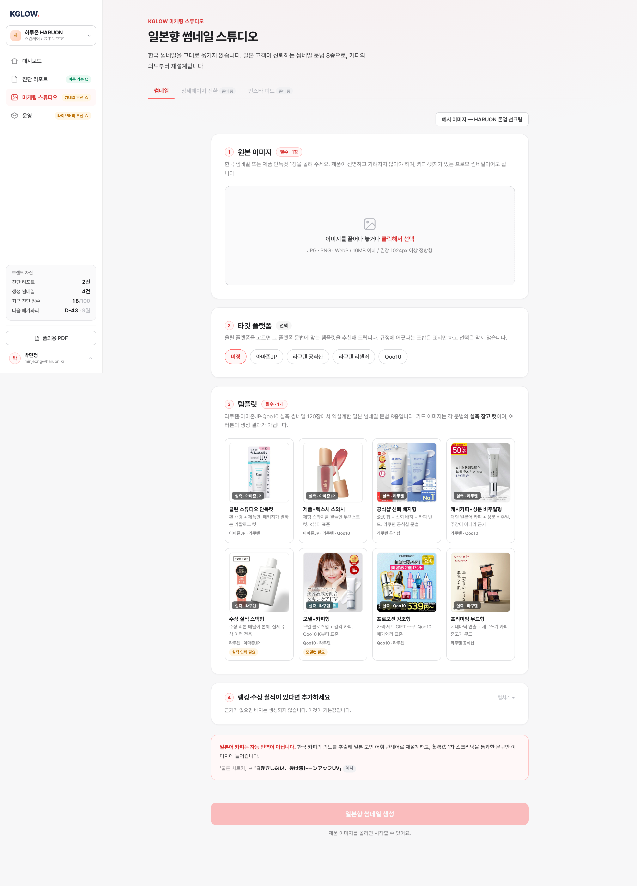
전에는 온보딩 설명을 처음 한 번만 뜨는 별도 화면에 실었다. 두 번째 방문부터는 아무도 안 보는 화면이 된다.
이제는 템플릿 그리드가 생성 폼의 고정된 3번째 섹션이다. 첫 사용이든 백 번째 생성이든 같은 자리에서 8종 문법을 훑고 고른다 — 온보딩이 일회성 화면이 아니라 화면 구조 자체가 됐다.
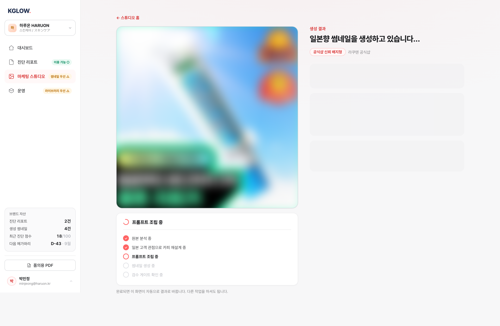
↓ 완료되면 결과 뷰로 crossfade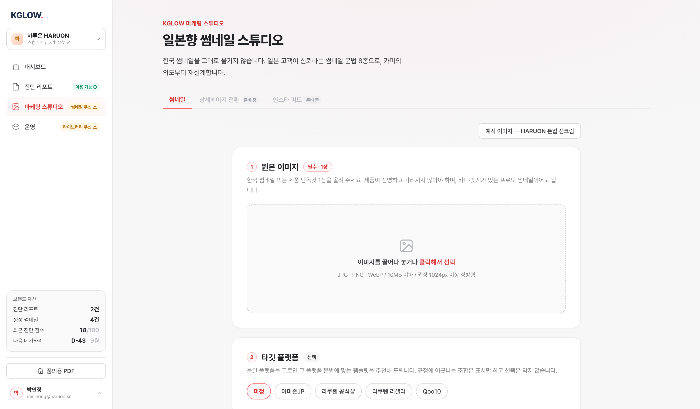
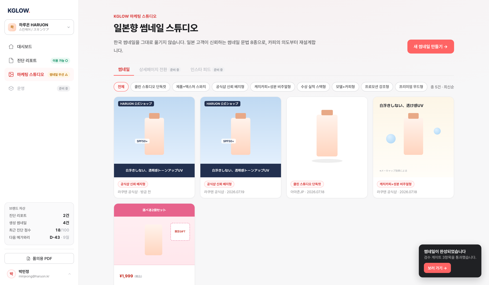
5단계를 이름으로 표시한다. 원본 분석 → 일본 고객 관점으로 카피 재설계 → 프롬프트 조립 → 썸네일 생성 → 검수 게이트 확인. 여기서도 진행률 %와 잔여 시간은 쓰지 않는다.
홈에 생성중 타일을 두고 결과는 따로 여는 구조라면, 완료 확인이 홈과 결과 두 곳으로 흩어진다. 제출 즉시 결과 화면으로 보내고 그 화면을 생성중 상태로 열면, 시작부터 완성까지 한 화면에서 끊기지 않는다.
홈 스트립의 생성중 타일·완료 토스트는 없어지지 않았다. 다른 화면에 가 있는 동안 상태를 알려주는 보조 표면으로 남는다.
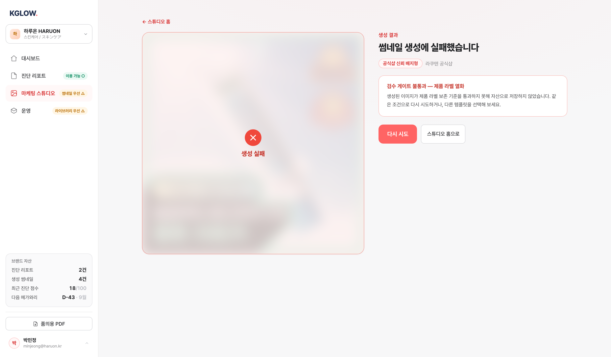
실패물은 자산으로 저장하지 않는다. 검수 게이트를 통과한 것만 남는다. 라이브러리에 있는 것은 전부 쓸 수 있다는 뜻이 되어야 하기 때문이다.
전에는 실패가 홈 그리드 한 칸(타일)이었다. 지금은 결과 화면 자체가 실패 상태로 열린다 — 생성중·완성과 같은 자리에서 실패도 다룬다.
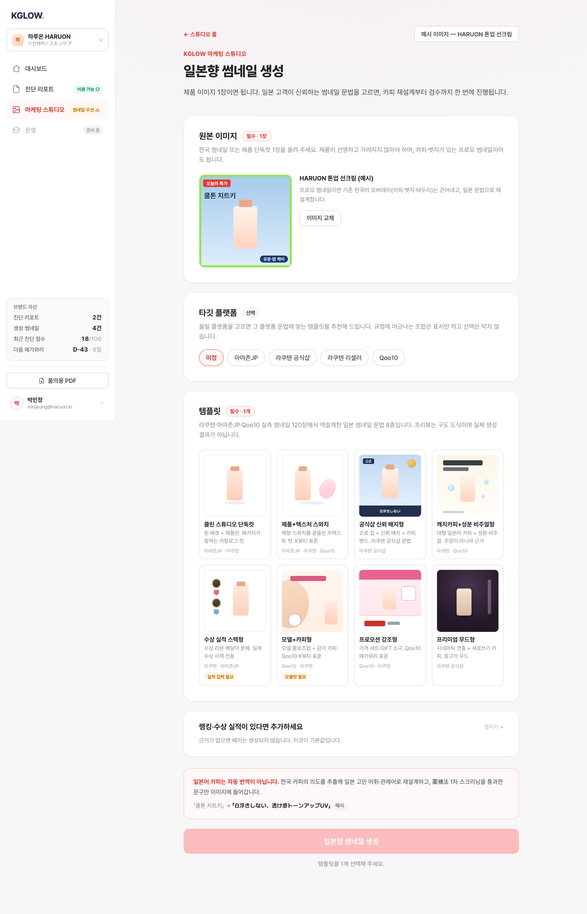
↓ 템플릿 · 실적 배지 · 제출 이어짐한국어 오버레이가 얹힌 이미지를 걸러내지 않는다. 대신 화면에 이렇게 적었다 — 기존 한국어 오버레이(카피·뱃지·테두리)는 걷어내고, 일본 문법으로 재설계합니다.
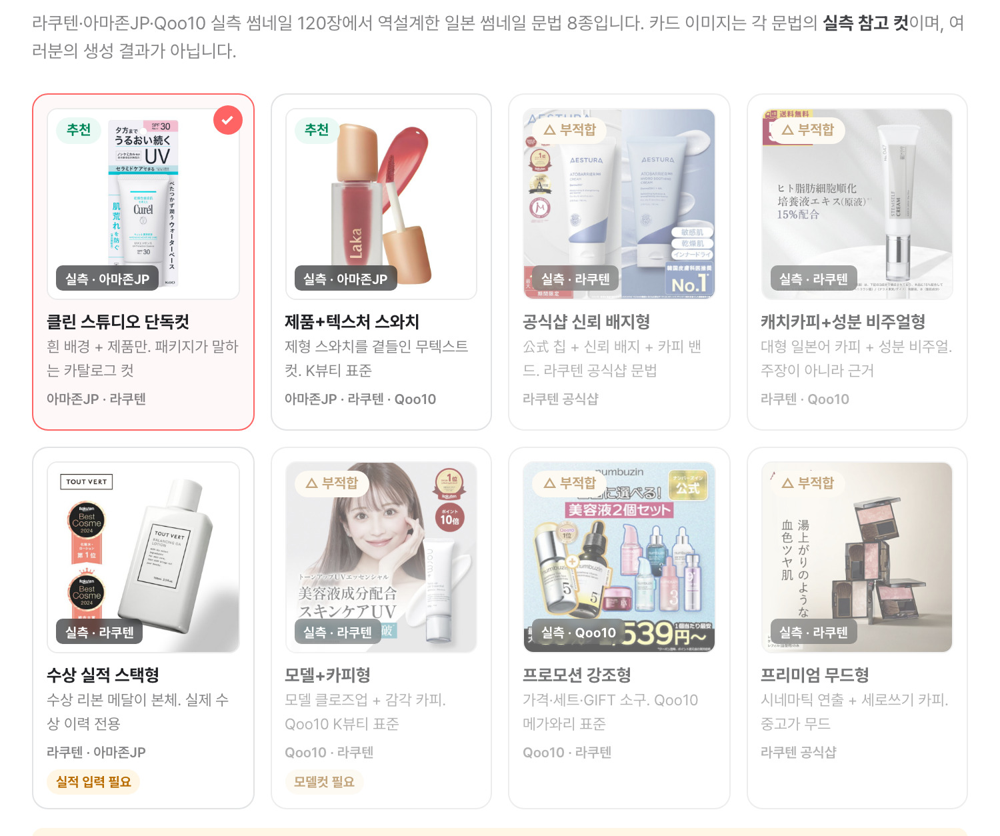
사유도 구체적으로 적는다 — “아마존 메인 이미지는 오버레이 금지. 클린 컷·텍스처 스와치 권장”
화면에 이렇게 적었다 — “규정에 어긋나는 조합은 표시만 하고 선택은 막지 않습니다.”
브랜드 사정은 우리가 다 알 수 없다. 막아버리면 예외 상황에서 도구가 쓸모없어지므로, 판단 근거를 주고 결정은 넘긴다.
다만 실적 입력 필요 · 모델컷 필요는 다르다. 근거가 없으면 만들 수 없는 것이라 별도 조건 배지로 구분했다.
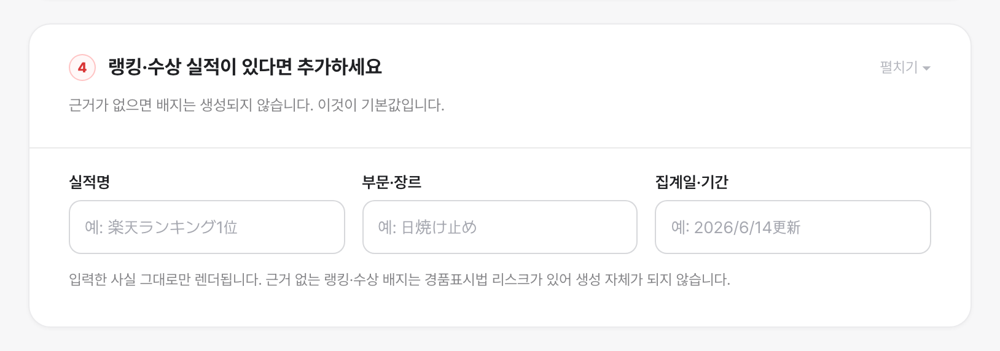
実績名 · 부문/장르 · 집계일. 하나라도 비면 안내가 뜨고 배지는 만들어지지 않는다. “실적명·부문·집계일이 모두 있어야 배지가 들어갑니다.”
“근거가 없으면 배지는 생성되지 않습니다. 이것이 기본값입니다.”
“근거 없는 랭킹·수상 배지는 경품표시법 리스크가 있어 생성 자체가 되지 않습니다.”
대부분의 브랜드는 아직 수상 실적이 없다. 빈 입력란을 펼쳐두면 채워야 할 것을 못 채운 느낌을 준다. 그래서 평소에는 접어두고, 「수상 실적 스택형」 템플릿을 고를 때만 자동으로 펴면서 필수 배지를 붙인다.
버튼 잠금은 안내일 뿐이다. 클라이언트와 서버가 같은 규칙을 이중으로 적용해, 잠금을 우회해도 서버가 차단한다.
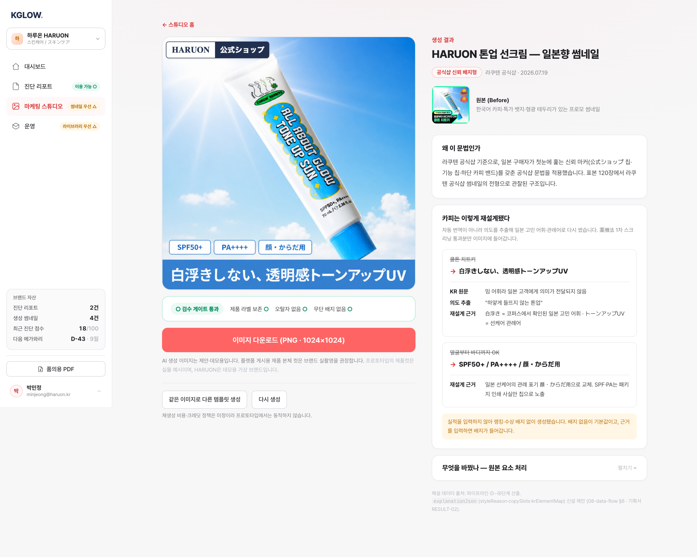
↓ 무엇을 바꿨나 표 이어짐이 화면의 본체는 “무엇이 나왔나”가 아니라 “왜 이렇게 재설계됐나”다. 결과만 주면 AI 이미지 생성기와 구분되지 않는다.
해설 데이터가 없는 자산은 그 영역 자체를 그리지 않는다. 빈 표는 출력하지 않는다.
생성 프롬프트 원문은 화면에 노출하지 않는다. 개발 디버그용이지 고객이 읽을 정보가 아니다.
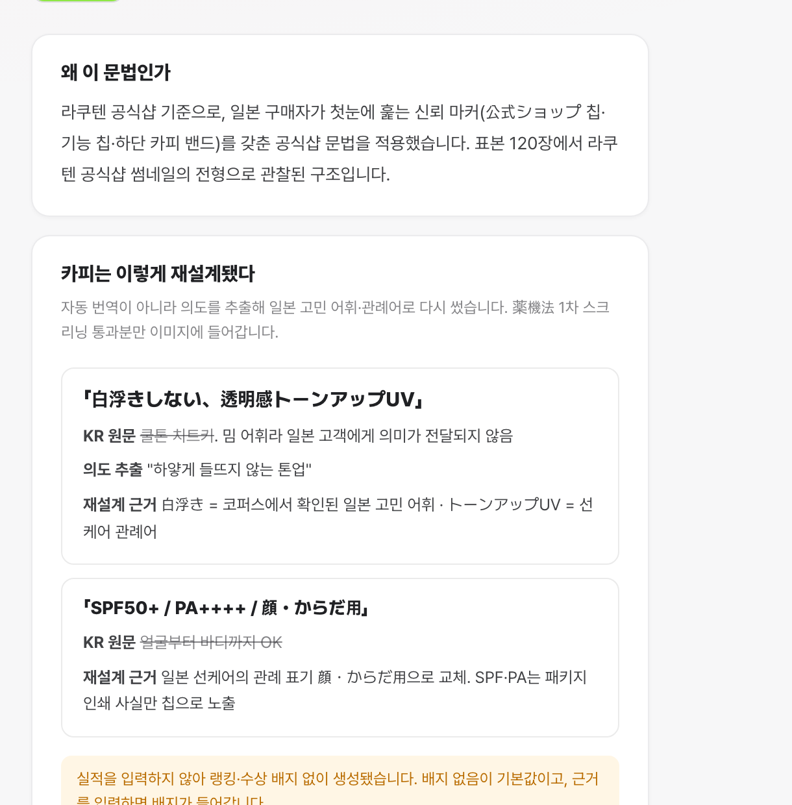
「쿨톤 치트키」
→ 밈 어휘라 일본 고객에게 의미가 전달되지 않음
→ 의도: “하얗게 들뜨지 않는 톤업”
→ 「白浮きしない、透明感トーンアップUV」
근거: 白浮き는 코퍼스에서 확인된 일본 고민 어휘, トーンアップUV는 선케어 관례어.
자동 번역 결과가 아니라, 의도를 다시 쓴 뒤 薬機法 1차 스크리닝을 통과한 문구만 이미지에 들어간다.
①에서 진단받고 ②에서 만든 것이 여기 모인다. 여기서는 만들지 않는다 — 다시 꺼내 보고, 다음 시즌을 준비하는 화면이다.
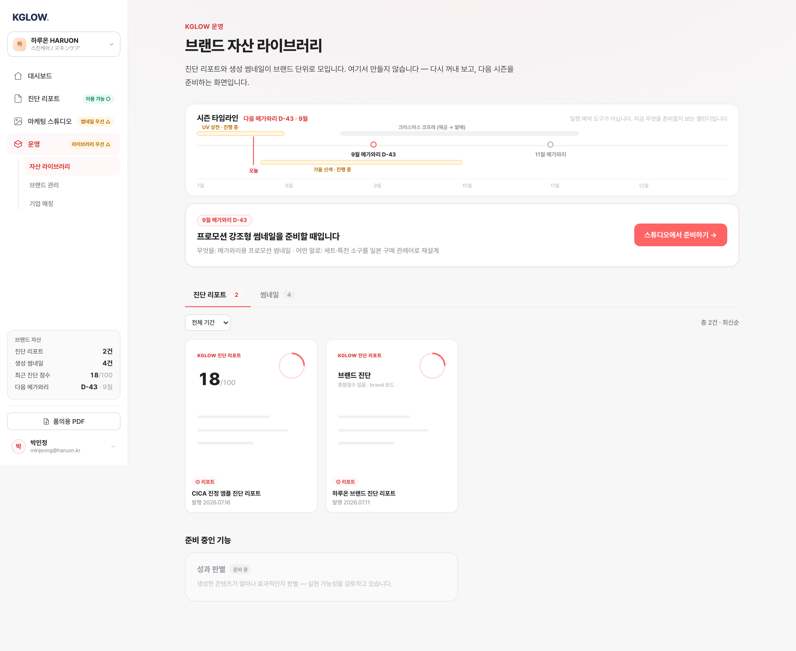
↓ 준비 중인 기능 이어짐② 스튜디오 홈이 생성 퍼널로 개편되며 갤러리가 사라졌다. 재열람·필터·다운로드 같은 관리 기능의 정본을 여기 하나로 모았다 — 같은 자산이 두 곳에서 다르게 보이던 상태를 없앴다.
전체/리포트/썸네일 필터 칩을 버리고 타입 탭 + 사이드바 하위 메뉴로 격상했다 — Canva류 콘텐츠 허브 관례대로 타입 구분은 1차 내비가, 칩·셀렉트는 기간 같은 2차 정제만 맡는다. 매칭 엔트리 카드도 하위 메뉴로 올려 홈은 라이브러리에 집중한다.
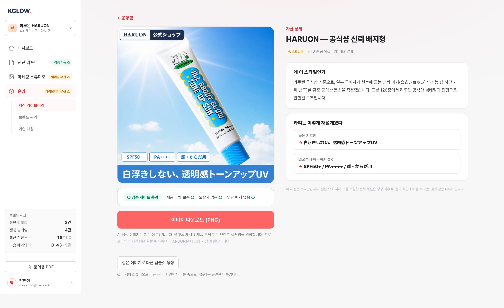
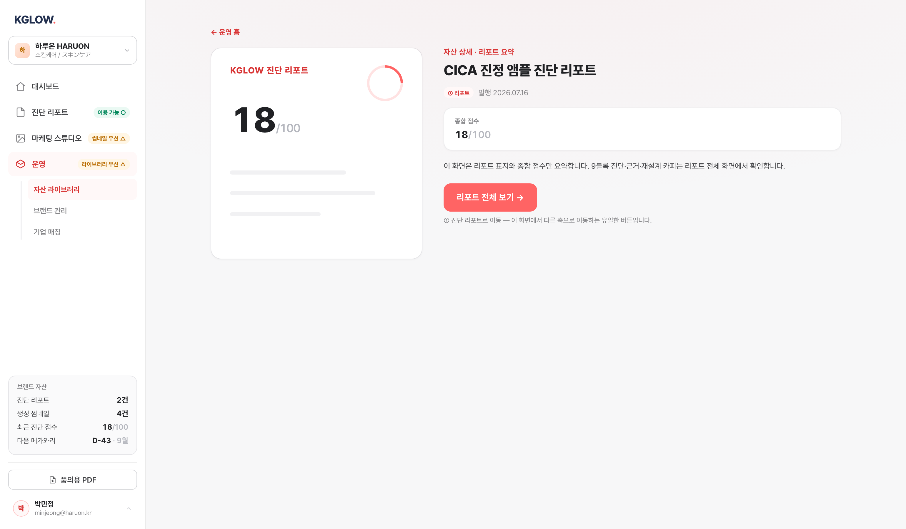
썸네일 모드 “같은 이미지로 다른 템플릿 생성” → ② 스튜디오 홈. 리포트 모드 “리포트 전체 보기” → ① 리포트. 두 버튼 모두 “이 화면에서 다른 축으로 이동하는 유일한 버튼입니다”라고 미리 예고한다.
개편 전에는 라이브러리 카드를 누르면 ② 스튜디오 결과 화면으로 탭이 이탈했다 — 기획서에 의도된 동작으로 적혀 있었지만, 실제로는 방금 있던 자리가 사라지는 혼란으로 이어졌다.
지금은 카드를 눌러도 사이드바의 “운영” 탭이 계속 켜져 있다. 보관·재열람은 축을 넘지 않고, 다른 축으로 가는 길은 상세 화면 안의 명시적 버튼뿐이다.
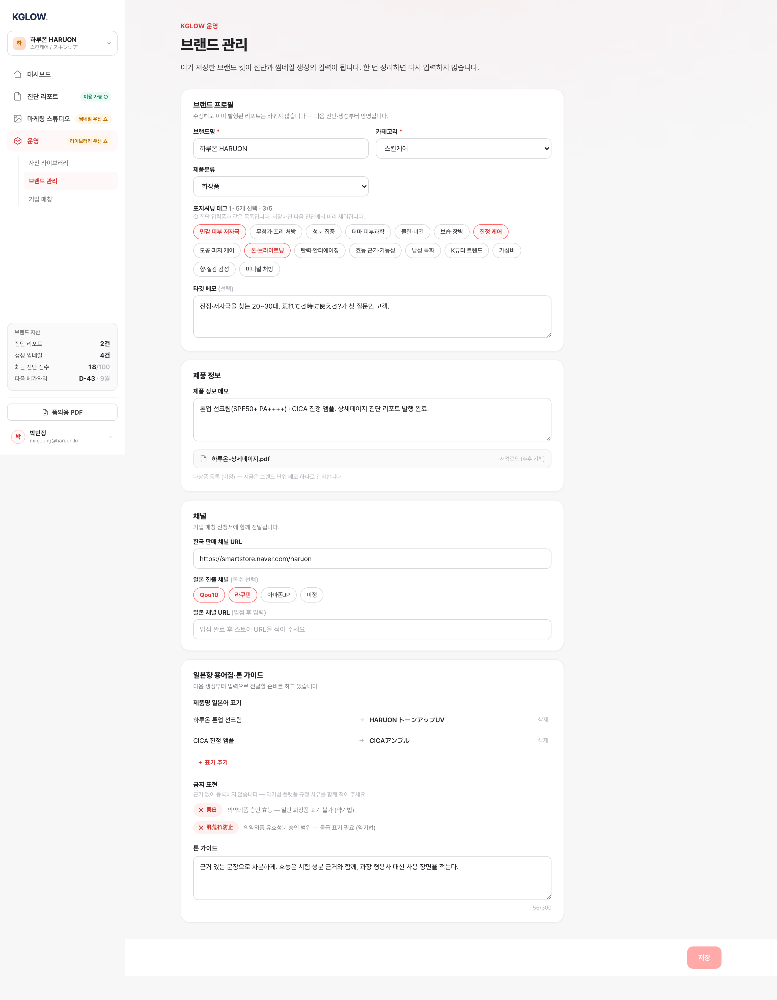
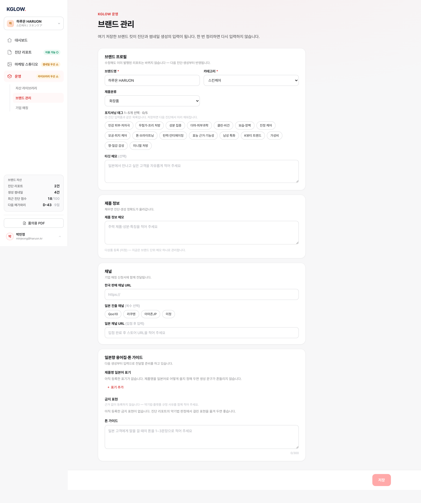
제품명 일본어 표기(KR→JA) · 금지 표현(약기법 사유 병기 — 美白은 의약외품 승인 효능) · 톤 가이드. 번역 사전이 아니라 일본 고객 관점 메시지 재설계의 입력이다.
Canva Brand Kit의 Brand Voice처럼 저장된 킷이 진단 프리필·생성 참조의 소스가 된다 — 단, 자동 참조 계약은 제안 상태라 화면도 “전달할 준비를 하고 있습니다”까지만 말한다(증거 원칙).
킷을 수정해도 이미 발행된 리포트는 바뀌지 않는다 — 진단 원본은 제출 시점 스냅샷이라는 데이터 원칙을 화면 캡션이 그대로 말한다.
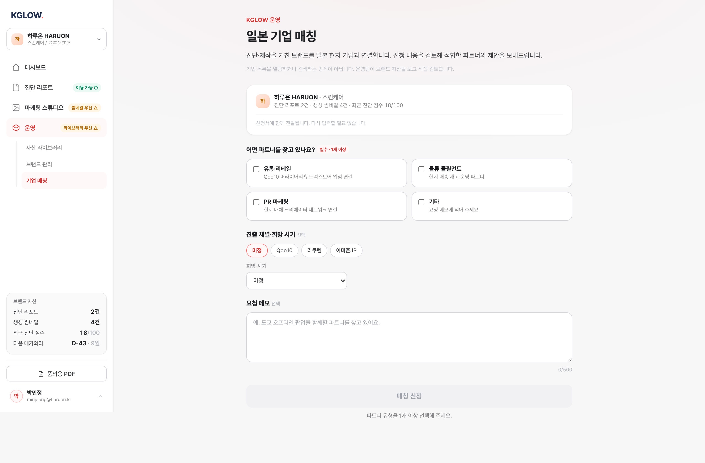
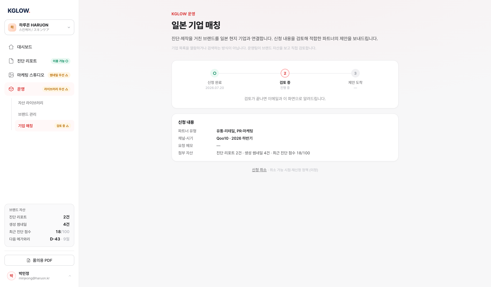
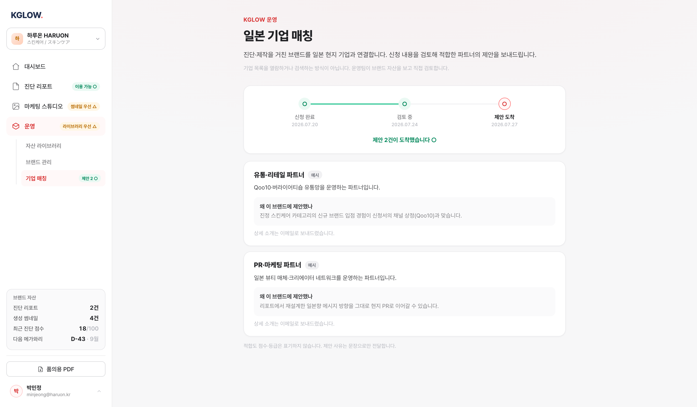
브랜드 프로필·리포트 건수·썸네일 건수·최근 진단 점수가 자동으로 첨부된다. “신청서에 함께 전달됩니다. 다시 입력할 필요 없습니다”라고 화면이 직접 말한다.
적합도 점수·순위·등급은 보여주지 않는다. 왜 이 파트너를 제안했는지는 문장으로만 설명한다. 근거 없는 판정 수치를 만들지 않는다는 증거 원칙을 여기도 그대로 적용했다.
상태는 운영팀이 수동으로 갱신한다. 자동 진행률·예상 소요일은 적지 않는다 — 지키지 못할 약속이기 때문이다.
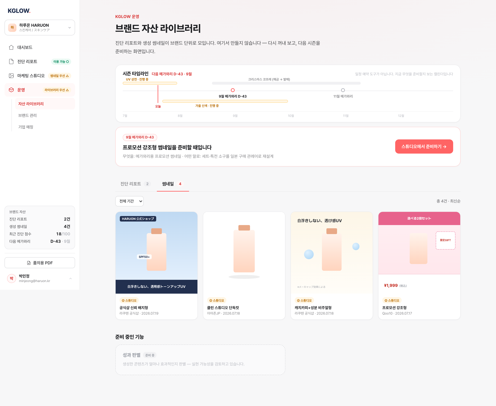
| 판단 | 어느 화면에서 | 왜 |
|---|---|---|
| 막기 전에 예고한다 | ① 입력 게이트 · ② 템플릿 딤 | 글자 수에 따라 산출이 달라진다는 걸 제출 전에 알린다. 부적합 템플릿도 사유만 붙이고 선택은 열어 둔다 |
| 진행률을 약속하지 않는다 | ① 처리 화면 · ② 결과 생성중 상태 | LLM·이미지 생성 소요를 예측할 수 없다. % 대신 단계 이름을 쓴다 |
| 기다림에 묶어두지 않는다 | ① “닫아도 계속” · ② 로딩 화면 없음 | ①은 오래 걸리므로 이탈을 허용하고, ②는 로딩을 결과 화면의 시작 상태로 흡수해 별도 화면을 만들지 않았다 |
| 온보딩을 별도 화면에 두지 않는다 | ② 템플릿 그리드 | 빈 상태 화면을 없앴다. 템플릿 8종 그리드가 생성 폼의 고정 섹션이라, 처음이든 백 번째든 같은 자리에서 문법을 훑는다 |
| 실패를 감추지 않는다 | ① 잡 전체 실패 · ② 결과 실패 상태 | 일반 템플릿으로 대체 발행하지 않고, 사유와 다시 시도를 함께 준다 |
| 없는 것은 그리지 않는다 | ① 잠긴 장 미생성 · ② 해설 없으면 영역 미출력 | “측정 못 했습니다”로 채운 표를 결재선에 올리게 하지 않는다. 빈 표도 출력하지 않는다 |
| 내부 코드를 노출하지 않는다 | ① 루브릭·약기법 ID · ② 스타일 A~H | 화면 라벨은 전부 평문. 내부 ID는 데이터 계약 안에만 둔다 |
| 색만으로 판정하지 않는다 | 양쪽 모든 상태 표기 | 색 + 글자 + 기호(○△✕) 3중 표기 |
| 항목 | 상태 | 메모 |
|---|---|---|
| 실측 이미지의 제품 반영 | 법적 검토 | 타사 저작물 인용을 발행 리포트에 실을지는 별도 법무 검토. 인물 포함 컷은 초상권 리스크 별도 |
| 브랜드 진단 가격 | 미정 | 유료는 확정, 가격만 미정 |
| PDF 내보내기 | 미구현 | 현재는 HTML 슬라이드 내보내기로 대체 |
| 결제 잠금 | 집행 미구현 | 무료 샘플 경계는 확정, 집행은 결제 수단 확정 후 |
| 인증 · 온보딩 | 범위 외 | 의도적 제외. 매번 직접 입력 |
| 항목 | 상태 | 메모 |
|---|---|---|
| 데이터 계약 델타 2건 | 계약 제안 | 자산 status 필드와 재설계 해설 저장 구조. 백엔드 스펙 개정 필요 |
| 이미지 모델 실검증 | 7/18~24 | 라벨 보존력·오탈자율 확인 후 UI 반영 |
| 스타일 자동 추천 | UT 8/1~3 | 지금은 “고객 선택 + 플랫폼 추천 배지” 절충안. 자동 추천 여부는 UT에서 확인 |
| 모델컷 업로드 | 추후 기획 | 업로더 미구현. 임의 인물은 생성하지 않는다 |
| 상세페이지 전환 인스타 피드 | 스펙 미착수 | 홈에 비활성 탭으로만 자리 예약 |
| 항목 | 상태 | 메모 |
|---|---|---|
| 성과 판별 | 검토 대상 | 실현 가능성·우선순위 미정. 지표·차트 UI로 그리지 않는다(증거 원칙) |
| 브랜드 킷 계약 | 계약 제안 | 용어집·톤 확장(BRAND-09)과 생성 자동 참조는 제안 상태. 화면 카피도 “전달 준비 중”까지만 |
| 매칭 상태 갱신 | 운영팀 수동 | 자동 진행률·예상 소요일 표기 없음. 상태는 사람이 바꾼다 |
| 자산 삭제 | 미정 | ② HOME-08과 동일 — 운영·스튜디오 공통 미정 |